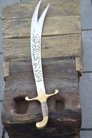
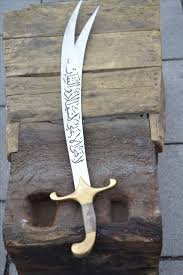

سيف ذو الفقار هو سيف شهير ارتبط باسم الإمام علي بن أبي طالب، ويُروى أنه منح للإمام في بدايات عصر الإسلام، وقد تميز هذا
السيف بنصله الفريد الذي ارتبط ببطولات الإمام وعدالته وسمو أخلاقه، فلم يكن مجرد أداة حرب بل رمزًا للقوة المقرونة بالحكمة
والرحمة، ومرآةً لمكانة الإمام علي في الوجدان الإسلامي بوصفه نموذجًا للقائد الشجاع العادل، فصار ذو الفقار أيقونة للقيم النبيلة
والالتزام بمعاني المروءة والفداء، وذاكرةً حيّةً تُذكّر بأن الشجاعة الحقيقية لا تنفصل عن الحق والنزاهة